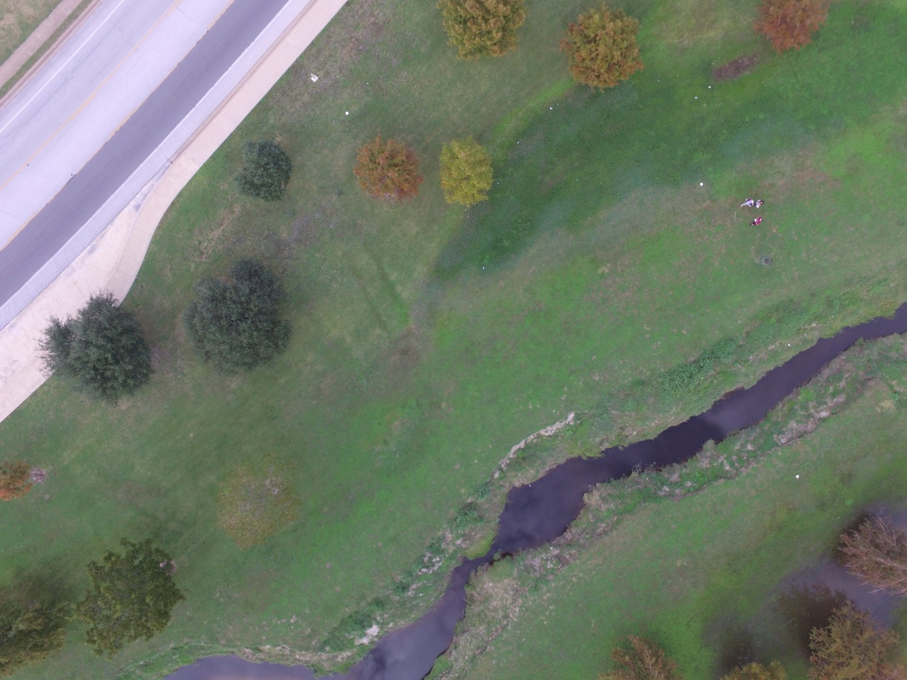

Projects
Selected work
Hazard and exposure mapping, thematic cartography, GNSS and drone survey,
municipal planning, and construction cost estimating.

GIS programming · In progress
Multi-Hazard Exposure and Population Risk Mapping, Brazos County
Wildfire, extreme heat, and flood risk combined into one composite score per
census tract, with Python automating map production across different hazard
weightings. Project lead and data acquisition.
View project →
Cartography · GEOG 390 · October 2025
Volcanic Hazards Map, Oregon
County population density as a five-class choropleth, active volcanoes as
graduated symbols scaled by eruption count, and the response network of highways
and hospitals drawn over both.
Project page [ADD]

Thematic cartography · GEOG 232 · Fall 2024
Tornadoes and Population Density, 1950–2022
A bivariate thematic map and published StoryMap testing whether population growth
is pushing more people into tornado-prone ground, taken through a full peer review
and revision cycle.
Project page [ADD]

Survey · 2024–2025
GNSS Geodetic Control and UAS Survey
Four control points established with a Leica GS15 and processed through NOAA OPUS,
plus five sets of nadir drone imagery with surveyed ground control, and a drafted
topographic plat.
Project page [ADD]

Planning · URPN 401 · Spring 2026
Pine Island Stormwater Utility Implementation Roadmap
A 58-page roadmap for standing up a municipal stormwater utility, with an
ERU-based rate structure, a draft ordinance, four peer-city case studies, and an
implementation timeline.
Project page [ADD]

Construction estimating · Sendero Homes · 2026
Automated Construction Cost Estimation Tool
An automated estimating tool built during my internship at Sendero Homes to
streamline budget creation and project cost analysis, applying cost estimation and
budgeting logic to real historical jobs.
Project page [ADD]